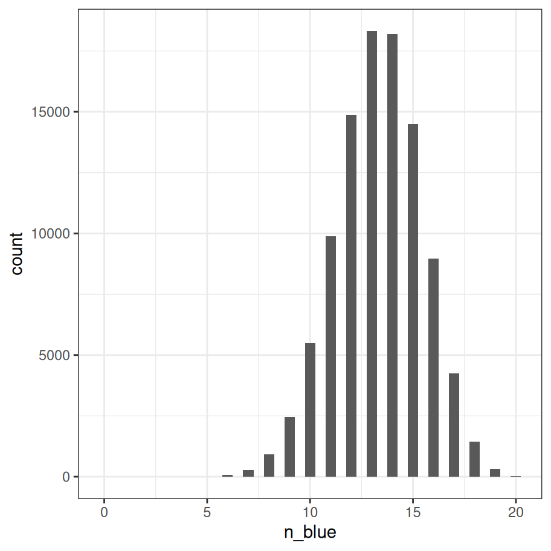
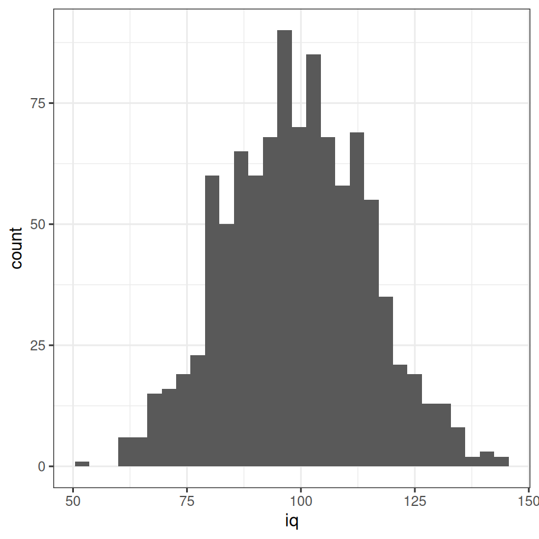
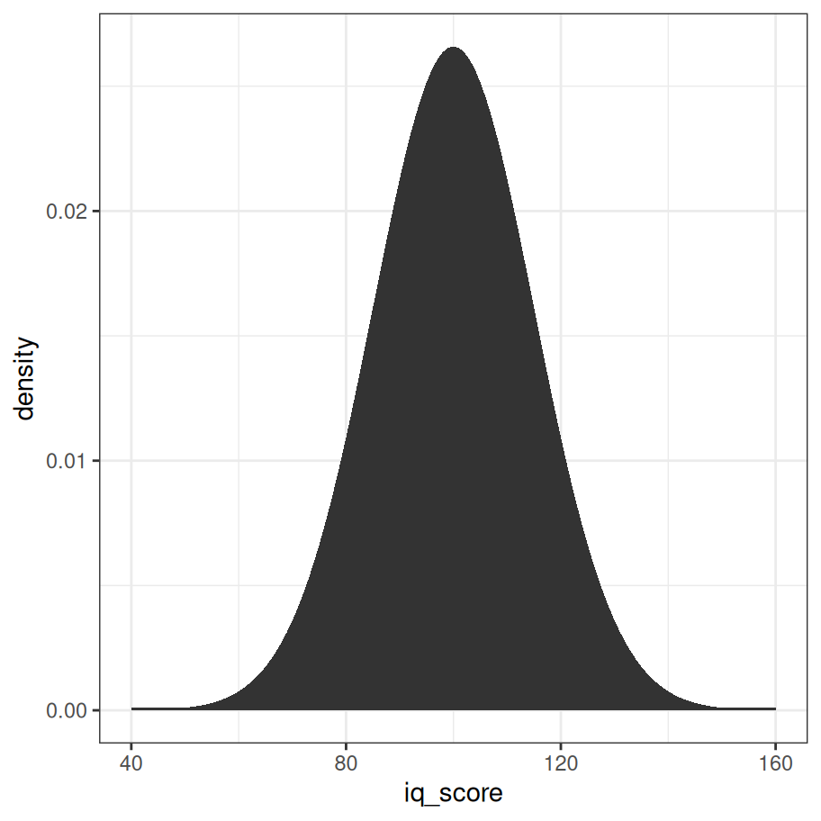
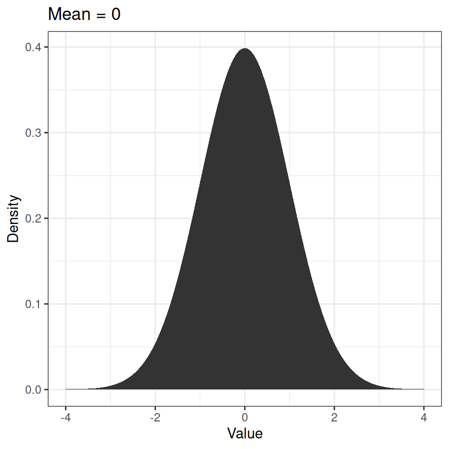
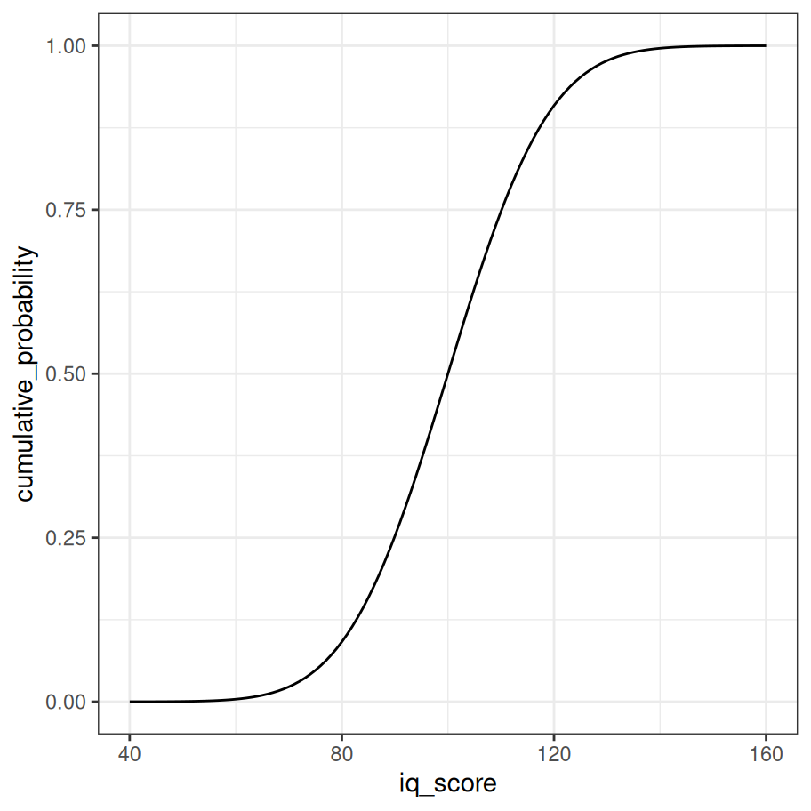
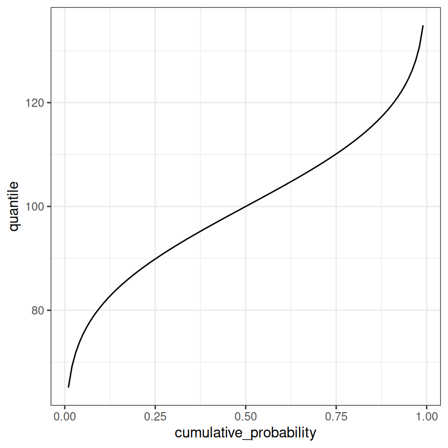

stimuli <- letters[1:10]
stimuli [1] "a" "b" "c" "d" "e" "f" "g" "h" "i" "j"R is often described as a statistical programming environment, because - while it does get used for an incredible variety of purposes - it began its life as a tool for helping statisticians analyse data. As such, it has an unrivalled collection of statistical packages built into it, and I’ll talk a little about some of them later. However, before starting to talk about statistics, it’s very useful to talk about probability distributions and how they are usually implemented in R.
An useful place to start is by considering the difference between probability and statistics. Probability theory concerns “the doctrine of chances”. It’s a branch of mathematics that tells you how often different kinds of events will happen, given some assumptions about the world. Some examples:
The critical point is that probabilistic questions start with a known model of the world, and we use that model to do some calculations.
What about statistics? Statistical questions work the other way around. In statistics, we do not know the truth about the world. All we have is the data, and it is from the data that we want to learn the truth about the world. Statistical questions tend to look more like these:
This time around, the only thing we have are data. What I know is that I saw my friend flip the coin 10 times and it came up heads every time. And what I want to infer is whether or not I should conclude that what I just saw was actually a fair coin being flipped 10 times in a row, or whether I should suspect that my friend is playing a trick on me. To help me solve this problem I might construct two probabilistic models, one assuming this is a fair coin and the other assuming that the data are a trick, and do some comparison of the two. Viewed this way, the statistical inference problem is to figure out which of these probability models is right. Clearly, the statistical question isn’t the same as the probability question, but they’re connected to one another.
Let’s start with a simple question that doesn’t have a simple answer: what is “probability”? It might seem surprising, but while statisticians and mathematicians (mostly) agree on what the rules of probability are, there’s much less of a consensus on what the word really means. In the statistic literature there are (at least) two qualitatively different ideas about how to define the term:
My personal view is much closer to the Bayesian perspective, but I’m also a pragmatist and I use both Bayesian and frequentist methods in my work. In any case, regardless of which version you prefer, Bayesians and frequentists agree on the core mechanics of probability theory, so the tools for working with probabilities in R are the same regardless of which school of thought you prefer!
The sample() function is an extremely useful tool. Suppose I have a set of 10 stimuli that I want to present to people in a random order. For simplicity I’ll label the items using letters:1
To sample them in a random order, all I need to do is this
Or to do the same thing with piped code…
[1] "d" "e" "j" "b" "g" "i" "c" "h" "a" "f"Notice that the output the second time around isn’t the same a the output the first time. The sample() function uses a pseudo-random number generator to order the items differently every time.
[1] "c" "f" "b" "a" "g" "h" "d" "j" "e" "i"
[1] "c" "h" "b" "a" "g" "j" "f" "i" "e" "d"
[1] "d" "i" "b" "g" "c" "a" "h" "j" "f" "e"
[1] "i" "g" "j" "h" "c" "a" "b" "e" "f" "d"
[1] "a" "f" "c" "h" "i" "e" "j" "g" "d" "b"As you can see if you feed in a vector of inputs, the default behaviour is to shuffle all the items. However, the sample() function is flexible. For example, “shuffling all the items” is a special case of “sampling without replacement”. Imagine taking all the stimuli (letters), and then placing them into a jar. To shuffle them into a random order all you need to do is shake the jar (randomise) pull them out of the jar (sample) one at a time until the jar is empty (no replacement).
The jars metaphor is nice because we can extend it. Suppose we only want to pull 6 of the 10 stimuli out of the jar:
Again, there are no repeats (it is impossible to pull the same item from the jar twice), but we stopped before pulling everything out. Here’s a loop showing you how the randomisation gives different answers every time, but it always follows the constraints of stopping at 6 draws and never draws the same item twice:
[1] "g" "b" "j" "a" "i" "d"
[1] "c" "d" "i" "b" "g" "e"
[1] "a" "j" "e" "h" "b" "d"
[1] "j" "f" "c" "e" "h" "b"
[1] "d" "h" "i" "f" "b" "j"Another way to extend the jars metaphor is to sample with replacement. In this version of the sampling scheme, every time we pull a letter out of the jar we write it down, but then put it back in the jar so that it becomes possible to sample it again.
[1] "i" "i" "d" "a" "f" "j" "h" "g" "j" "b" "a" "b" "a" "a" "h"
[1] "g" "g" "b" "a" "g" "j" "d" "f" "h" "i" "b" "j" "b" "g" "d"
[1] "e" "j" "a" "d" "h" "f" "j" "b" "d" "c" "b" "g" "g" "b" "a"
[1] "b" "f" "g" "a" "e" "h" "g" "d" "f" "e" "h" "e" "j" "j" "i"
[1] "d" "c" "f" "f" "h" "d" "f" "b" "i" "f" "b" "b" "b" "d" "h"Notice that this time you can produce sequences of stimuli that are longer than the original set (because you’re putting them back in the jar). In this case even though I only had 10 items, each output has 15 samples from that set: there are of course repeats!
A final way we can extend the metaphor is to imagine that some of the letters are written on larger pieces of paper than others: so when you reach into the hat you’re more likely to pull out the larger ones.
You can use this when sampling with replacement and without. Here’s what it looks like when sampling without replacement:
[1] "j" "i" "a" "g" "h" "c" "d" "f" "b" "e"
[1] "f" "e" "c" "g" "j" "d" "h" "i" "b" "a"
[1] "i" "c" "e" "d" "g" "b" "h" "j" "a" "f"
[1] "i" "g" "h" "j" "e" "d" "f" "c" "b" "a"
[1] "c" "i" "f" "j" "b" "h" "d" "g" "e" "a"So in this output every line shuffles the 10 items, but there’s a definite bias in how the items are ordered! We’re much more likely to start with the later letters than with the early ones!
We can also do this when sampling with replacement:
[1] "f" "c" "j" "j" "h" "e" "g" "j" "i" "c"
[1] "f" "h" "g" "g" "j" "i" "g" "i" "j" "j"
[1] "g" "f" "j" "c" "h" "c" "i" "h" "i" "b"
[1] "h" "d" "h" "f" "f" "e" "h" "d" "i" "a"
[1] "f" "h" "g" "d" "j" "d" "d" "i" "h" "j"In this output, you can see that we’re very unlikely to sample the letter “a”.
The sample() function gives you a good feel for how you can take a set of entities (stimuli, participants, outcomes, etc) and do probabilistic operations with them. When doing statistics we sometimes like to abstract away from the simple sampling mechanism and start talking in terms of probability distributions. To see how the abstraction works let’s introduce one of the simplest examples, the binomial distribution. Imagine we have a six sided die, in which four sides are coloured "blue" and two sides are coloured "red". Let’s roll the die 20 times and see what we get:
[1] "red" "red" "red" "blue" "blue" "red" "blue" "blue" "blue" "blue"
[11] "red" "red" "blue" "blue" "blue" "blue" "red" "blue" "red" "blue"We can count the number of times the result was "blue":
Of course, there’s nothing stopping us from repeating this exercise several times:
[1] 19
[1] 11
[1] 14
[1] 11
[1] 15In fact, let’s go all out on this. Let’s replicate this tiny experiment 100,000 times because that’s easy to do with R:
n_blue
0 1 2 3 4 5 6 7 8 9 10 11 12
0 0 1 0 2 12 66 268 930 2454 5498 9874 14878
13 14 15 16 17 18 19 20
18316 18212 14504 8960 4252 1433 315 25 With this particular die the probability of observing a "blue" on any one roll is two-thirds (4 out of 6 sides) and not surprisingly the outcomes of this “roll the die 20 times” experiment tend to be distributed mostly between 12 and 15. I hate looking at tables of numbers, so let’s draw a picture:

This picture is essentially a visualisation of the binomial distribution with success probability prob = 2/3, so it’s worth taking a moment to be explicit about what we’ve done. Every one of our experiments produces an outcome (number of blues) that can be described as one random draw from the binomial distribution. So the 100000 replications of the experiment can be viewed as a set of 100000 numbers sampled from the binomial. R contains a function rbinom() that we can use to do this directly:
If we process this set of numbers using the same code, we get an almost identical figure. In fact, because I’m going to reuse this code, let’s write a function:
plot_samples <- function(x, size = 20) {
x <- factor(x, levels = 0:size)
frequencies <- table(x)
proportion <- frequencies / sum(frequencies)
pic <- as_tibble(proportion, n = "proportion") %>%
mutate(x = as.numeric(x)) %>%
ggplot(aes(x=x, y = proportion)) +
geom_col(width = .5) +
xlab("outcome value") +
ggtitle(sum(frequencies)) +
ylim(0,.3) +
theme_bw()
return(pic)
}Now call it:
Of course, the only reason it looks this nice and smooth is that we replicated the experiment 100000 times. Let’s modify the code so the we start out with a relatively small number of replications and watch it smooth out as it gets larger:
The normal distribution is the perhaps the most widely used distribution in statistics, so I should talk about it in some detail. It’s also a good moment to talk about how the tools for working with probability distributions in R are structured. As a rule, any distribution that you want to work with in R will be associated with four separate functions. If I want to work with a normal distribution, for instance, there are four different functions - rnorm, dnorm, pnorm and qnorm. If I want to work with a uniform distribution, the functions are named runif, dunif, punif and qunif. For a binomial distribution, they are rbinom, dbinom, pbinom and qbinom. The four versions are:
n random outcomes from the distribution.x if it is generated from this distribution.q, and it tells you the probability of obtaining an outcome smaller than or equal to q.p, and gives you the corresponding percentile. That is, the value of the variable for which there’s a probability p of obtaining an outcome lower than q.Let’s start with a classic example in the psychological context. By convention, measures of cognitive ability (IQ scores) are designed to have a mean of \(\mu = 100\) and a standard deviation of \(\sigma = 15\). The rnorm() function allows us to generate normally distributed numbers:
[1] 86.01811 81.74457 93.75170 96.62309 86.59609 78.08134 95.19160
[8] 87.37819 85.95784 109.85532In a real IQ battery such as the WAIS you would probably get results rounded to the nearest whole number, so it probably makes more sense to think of this as the data:
If we draw a quick histogram of this…
… it’s pretty obvious that you can’t tell much about the distribution. So let’s increase the sample size to 1000:

That looks a lot more like the shape we were expecting!
Much like the binomial distribution you can imagine that as the sample size gets larger, this shape will smooth out and it will eventually look like a perfect bell curve. As before there is a formula that describes the probability density:
\[
P(x | \mu, \sigma) = \frac{1}{\sqrt{2\pi} \sigma} \exp \left( -\frac{(x-\mu)^2}{2\sigma^2} \right)
\] Just like with the dbinom function, we could implement our own version of it if we really wanted. But why bother? R already does this and does it in a much more efficient way than you or I would. So let’s cut to the chase and use the dnorm function to do the work:

You’re probably already familiar with how the parameters of the normal distribution work, but even so it’s nice to look at some pretty animations. In the first one, we can see what happens when we shift the mean (i.e. \(\mu\)) of the distribution:

The third tool for working with normal distributions is the pnorm() function, which calculates the cumulative distribution function (CDF) for the normal distribution. The CDF describes the probablity that the value \(x\) sampled from the normal distribution will be smaller than a particular quantile \(q\). That’s a little abstract, but suppose our question was to ask the probability that someone has an IQ of 110 or below. We could compute that like this:
In other words, if an IQ test has been properly calibrated you’d expect about 75% of people to score 110 or below. As with our other examples we can draw the complete CDF for the distribution like this:

Just because we can, here’s an animation:
The quantile function is just the inverse of the cumulative distribution (i.e., x and y axes are swapped):

The quantile function can be especially useful for working out critical values. So for example, to work out the value of a standard normal that corresponds to the 2.5% lower tail:
Not yet written!
The letters vector is a built in vector in R that contains the 26 lower case letters of the English alphabet in canonical order. There is also a LETTERS vector that has the upper case letters.↩︎